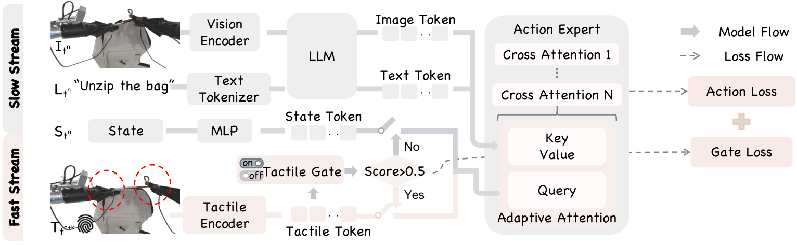

AT-VLA
触觉不是一直有用：用一个学出来的门决定何时注入，并让它走一条比视觉语言快三倍的通路。
AT-VLA: Adaptive Tactile Injection for Enhanced Feedback Reaction in Vision-Language-Action Models
四项真机接触任务各 15 次，整任务平均从 GO-1 的 0.22 升到 0.50；同样的触觉若全程注入反而掉到 0.13。
01这篇要解决什么？
给预训练 VLA 加一路没见过的模态，通常做法是下游微调时直接拼进去，但这会挪动模型原有的注意力，抓取这种本来做得好的阶段反而变差。这篇提出两个问题：什么时候该让触觉说话，以及在 VLA 本身推理很慢的前提下，高频触觉怎么才来得及影响动作。
02先看一个场景
机器人要顺着一条弯曲的拉链把袋子拉开，再换只手去拧瓶盖。自由空间里移动的时候，指尖什么都没碰到，触觉读数是一片平的噪声；真到拉链发紧、瓶盖打滑的瞬间，读数才变得有意义。把这条输入从头接到尾，模型连该抓哪个物体都开始抓偏。
03方法怎样运转？

- 01
先认一件事：直接拼触觉会把预训练能力拽坏
作者做了个对照，一边只微调动作专家、不给触觉，一边把触觉编码器的输出全程当条件送进去。后者不但没变好，抓取定位还明显变差；动作专家的注意力图显示焦点从目标物体挪到了周边区域。消融表里这一格是 0.13，比原版 GO-1 的 0.22 还低。
- 02
触觉门：学一个二分类判断此刻有没有接触
触觉编码器是几层 MLP 的轻量模块，输出触觉 token；门控网络同样是 MLP，读这个 token 给出一个接触分数，超过阈值就打开，论文举的例子是 0.5。监督靠人工把训练轨迹逐帧标成接触与非接触，用二元交叉熵，与动作损失按 0.01 的权重一起训。
- 03
自适应交叉注意力：换 query，不换结构
动作专家原本用图文 token 作 key 和 value、状态 token 作 query。门关着时与原版 VLA 完全一致；门开了就把 query 换成触觉 token。这样不追加新 token、不改特征维度，避免扰动预训练模型对 token 序列的建模。
- 04
双流：慢的看图说话，快的摸
视觉与语言走慢流，由 InternVL-2B 那一路低频产出潜特征，作为一个动作块窗口内的条件；触觉走快流，高频喂进动作专家。每次预测都用最新的触觉加上最近一次的视觉语言输出。训练时快慢比在 1 到动作块长度之间随机取，推理固定 3:1，闭环时延 0.04 秒。门关着时两流同频。
- 05
触觉格式与训练成本
默认格式是 Xense 传感器的 6 维合力，三维法向加三维切向；另两种是 2 维 marker 位移与视触图像，后者借现成的 Sparsh 预训练编码器。作者训练触觉编码器、门控网络与下游微调的动作专家，基座 GO-1 的视觉语言主干沿用 AgiBot World 预训练权重。
# 基座 GO-1（InternVL-2B + DiT 动作专家）；触觉编码器与门控网络由作者训练
z_T = 触觉编码器(force6D) # 几层 MLP；Xense 给三维法向 + 三维切向
if 门控网络(z_T) <= 0.5: # 门关：与原版 VLA 完全一致
kv, q = 慢流(I, L), z_S # 图文作 key/value，状态 token 作 query
执行(动作专家(q, kv)) # 两流同频，14 维双臂末端位姿动作块
else: # 门开：只换 query，不加 token、不改维度
kv = 慢流(I, L) # 低频，一个动作块窗口内复用
for _ in range(3): # 快慢 3:1，单次闭环 0.04 秒
z_T = 触觉编码器(最新一帧触觉)
执行(动作专家(q=z_T, kv=kv))
# 终止条件是动作块跑完、接触消失后门自己关回去
# 门只判有没有碰到，不判做没做成；没有成功检测，也没有重试通路方法与结果的原文定位见本页引用。
04跟着这个场景走一遍
教学推演：回到上面的场景。第一步，机械臂还在自由空间里朝拉链头移动，指尖没有接触，触觉编码器给出的 token 送进门控网络后分数低于阈值，门关着。此时动作专家的交叉注意力与原版 GO-1 完全一致：图文 token 作 key 和 value，状态 token 作 query，两条流同频。抓取靠的是 AgiBot World 上预训练来的视觉定位能力，作者的对照说明这一段最怕被打扰。第二步，夹爪咬住拉链头，法向力跳起来，门被打开。query 从状态 token 换成触觉 token，序列长度与特征维度都没变，模型不必面对一段它从没见过的 token 排布。第三步，双流拉开频率：InternVL-2B 那一路按动作块窗口低频更新一次潜特征，触觉那一路连续跑三次，每次都拿最新的一帧力读数生成动作，单次闭环 0.04 秒。拉链走到弯处开始发紧时，切向力先变，轨迹在下一个 0.04 秒里就被拉回曲线上。第四步，拉完松手，接触消失，门关回去，模型退回原版 VLA 的行为去做下一段。整条链路里没有人问过这次拉开了没有：门只回答有没有碰到，不回答做没做成。论文自己报告的拧盖失败正是这样溜过去的——夹爪握得不够紧、拧到一半打滑，没有任何模块把它识别成一次失败。
05实验到底表现怎样？
平台是 AgiBot Genie1，双 7 自由度臂，一台前视相机加两台腕部相机，夹爪装 Xense 触觉传感器，演示由 VR 头显遥操作采集。每项任务 30 到 50 条演示，测试 15 次。接触密集任务四项：拉开拉链、盖章、擦花瓶、拧盖；另有取放与开抽屉两项非接触任务。
作者报告的实验结果 · v2
| 整任务成功率 · 表 1 | GO-1 | π₀.₅ | AT-VLA |
|---|---|---|---|
| 拉开拉链 | 0.20 | 0.0 | 0.33 |
| 盖章 | 0.13 | 0.20 | 0.46 |
| 擦花瓶 | 0.07 | 0.33 | 0.67 |
| 拧盖 | 0.27 | 0.46 | 0.53 |
原始证据：自适应触觉注入：§3.2 ↗ · 反应双流：§3.3 ↗ · 主结果：表 1 ↗ · 消融：表 3 ↗
分母是 15 次，0.07 就是一次，四项任务的差距多在两到八次之间。表 1 里 VTLA 与 RDP 那两行不能与前三行并排读：它们没有预训练权重，只在接触阶段的子集上训练，测试时由人工把机器人摆到理想起始构型，所以拧盖 0.80 与 0.53 比的不是同一件事，论文自己也说明了这一点。
06收益来自哪里，又停在哪里？
消融与机制证据
表 3 按四项接触任务取平均：原版 GO-1 是 0.22，全程直接注入 6 维力掉到 0.13，加上触觉门与自适应交叉注意力升到 0.39，再加双流到 0.50。换触觉格式结论一致，marker 2 维从 0.05 到 0.32，视触图像从 0.02 到 0.40。三种格式里维度最低的 6 维力最好。
结论的适用边界
模型来源分得比较清楚。基座是现成的 GO-1，用 InternVL-2B 作视觉语言模型、DiT 作动作专家，在 AgiBot World 上预训练；视触图像那一路的触觉编码器借的是现成的 Sparsh。作者自己训的是轻量触觉编码器、门控网络与下游微调的动作专家，自适应交叉注意力则是对原结构的改动。前提成本有两块：一是每项任务 30 到 50 条遥操作演示，二是门控所需的逐帧接触标注，这份标注由人工完成，论文没有给出标注工时或一致性检查。评测全部在同一台 Genie1 上、每项 15 次，没有跨本体验证；训练步数、动作块长度的取值、门阈值除举例的 0.5 之外是否调过，论文都没有给出。还有一处要留意：所谓模态无关只在两项非接触任务与盖章上验证过，掉了触觉之后盖章从 0.46 回到 0.20。
07放回全书的脉络
与 TouchGuide 放一起读最清楚：那边完全不碰权重、只改采样，这边改的是架构与训练；对比 Harness VLA，决定何时交权的从外层 Agent 变成一个学出来的门。
08把阅读变成一个小研究
把接触门换成固定阈值的力大小判据与一个永远打开的门，比较三者在自由空间段与接触段各自的失败次数。
先自己回答：这项实验怎样才有解释力？
要看的是门的错误代价是否不对称：过早打开会伤到抓取定位，过晚打开只损失反应速度。只报总成功率看不出这两种错哪一种在起作用。
- 用自己的话说出这篇改变了哪个模块。
- 画出它的输入、输出和一次失败如何被处理。
- 复述一个结果，同时说清基线、指标与实验条件。这一问不给答案，材料在第 05 节。
先自己答，再看前两问的参考答案
这篇改了哪个模块改的是预训练 VLA 内部动作专家的条件输入：加一个判断有没有接触的门，门开时把交叉注意力的 query 从状态 token 换成触觉 token，并让触觉以三倍频率单独走一条通路。它没有改视觉语言主干，InternVL-2B 那一路照旧；没有追加新 token 或改变特征维度，这正是它与常见做法的分界；也没有改动作的输出形式，仍是 14 维双臂末端位姿的动作块。更没有加高层规划或执行之后的验收。
输入、输出与一次失败如何被处理输入是三路图像（前视加左右腕）、一句语言指令、本体状态，以及触觉。触觉默认取 Xense 传感器的 6 维合力，三维法向加三维切向；另两种可选格式是 2 维 marker 位移与视触图像，后者用现成的 Sparsh 编码。这些输入被分到两条频率不同的流上：图像与语言进慢流，由 InternVL-2B 产出潜特征，在一个动作块窗口内被重复使用；触觉进快流，每次都取最新的一帧。输出是 14 维的双臂末端位姿动作块，由 DiT 动作专家生成，推理时快慢比固定 3:1，单次闭环 0.04 秒。失败这条通路论文没有：门控网络判的是此刻有没有接触，不是上一步做没做成，它的监督标签也只有接触与非接触两类。系统里没有成功检测器、没有重试、没有重新规划，所谓对失败的应对只是触觉读数变化之后下一次动作被改写——拉链发紧时靠力的变化把轨迹拉回来。论文报告的失败例子里，拧盖时夹爪打滑就没有被任何模块识别出来。
触觉不是一直有用：用一个学出来的门决定何时注入，并让它走一条比视觉语言快三倍的通路。
↗带着位置回到原文
首发日期用于时间排序；以下方法与结果对应 v2。数据为论文作者报告，本讲义没有独立复现实验。
QA就这一页提问或讨论
对某个数字、某条边界或某个推演有疑问，欢迎直接留言：讨论按页面分开，回复会保留在 XinrunXu/awesome-agentic-robotics-papers 的 Discussions 里，需要一个 GitHub 账号。